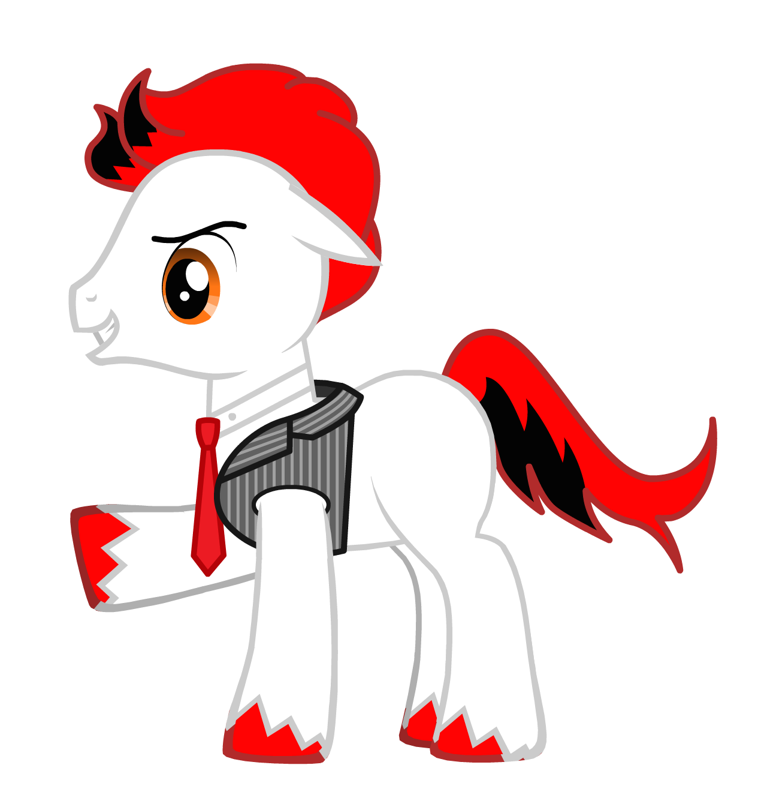
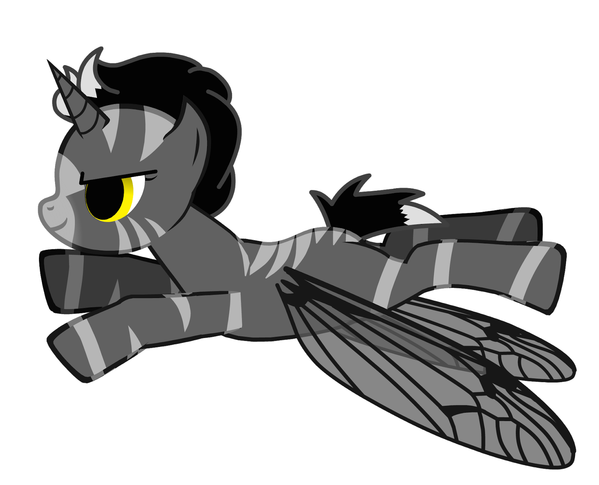
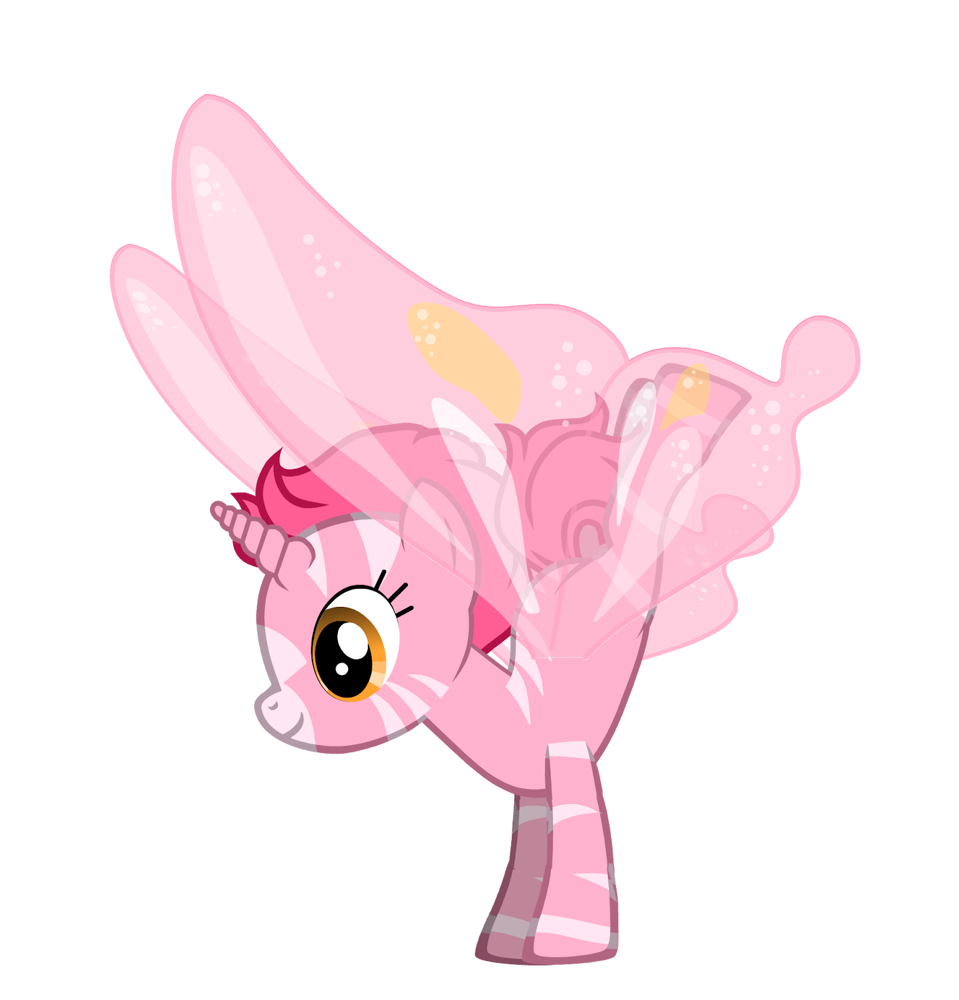
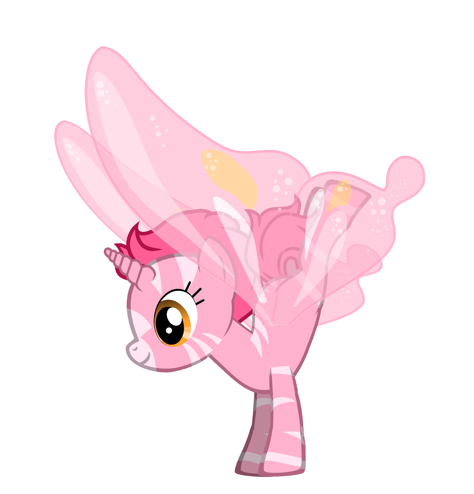

Ponies created by Deirdré Straughan with an online game: General Zoi’s Pony Creator
This tool creates "pony codes" (a long string of numbers and letters) which can be re-entered to restore the edit session, allowing you to modify the ponies further. Many of these pony codes are included here.
If you use the ponies, please give credit to General Zoi's Pony Creator.
A shirt with many of these ponies can be bought here (Chinese).
The Original DTrace Ponycorn
History of the pony mascot: http://dtrace.org/blogs/about/dtracepony/
Linux perf_events (aka the "perf" command)
WH0OP8S////Vp/B8S//80un18378m26Vp/Cvi/y3yVp/C/t//21
000010000351080046247037056304335338334314356314316000

SystemTap
Inspired by the (official?) "smiley tap" logo, which is yellow with a shouting face: http://en.wikipedia.org/wiki/SystemTap
WH0SZ8S//////Hd8W//80nk18371m3p//80+wzS3yVp/C/t//23

WH0SZ8S//////Hd8W//80nk18371m3p//80+wzS3yVp/C/t//23
ktap
Ed0OOPK////YOc98S0Axlok18371m3mx02Cz9h240Vp/C/t//21
DTrace for Linux - Paul Fox port
2S2S000100FEFEFE997D6B03001FE0000UN183700020000271FE6600FCC46219107F3FCC004CB2
LTTng
Inspired by the LTTng digging mole mascot: http://lttng.org/
Wg0U00VYOc9/yIT00O3aJ0l18370001////Oc9Y01Vp/C/t//21110000
Oracle DTrace for Solaris
WJ0SXgC/////m008r/tSMak18371m01/m0000003yVp/C/t//22

Oracle DTrace for Linux
WJ0SV00/////m008r/tSMak18371m01/m0000003yVp/C/t//2232xHma44Oc9Y

Linux ftrace
WW0Oi0IVCLs//Hd0FO3aJpn1837003i05uW/t//2jVp/C/t//29
000000000017000336325000000000000000000000000000054000
Linux eBPF
Inspired by the capabilities of eBPF: fast and "crazy stuff". See slide 5 of http://events.linuxfoundation.org/sites/events/files/slides/bpf_collabsummit_2015feb20.pdf
bQA00iwJqzFjxUt16aoSdqn18373W070000uE3W08Vp/C/t//21

Bpftrace
1N3X000551FFB3CEFFE7F300001FFA330UL183700000000000FF5F96FF7FFF00107F3FCC004CB2

 
